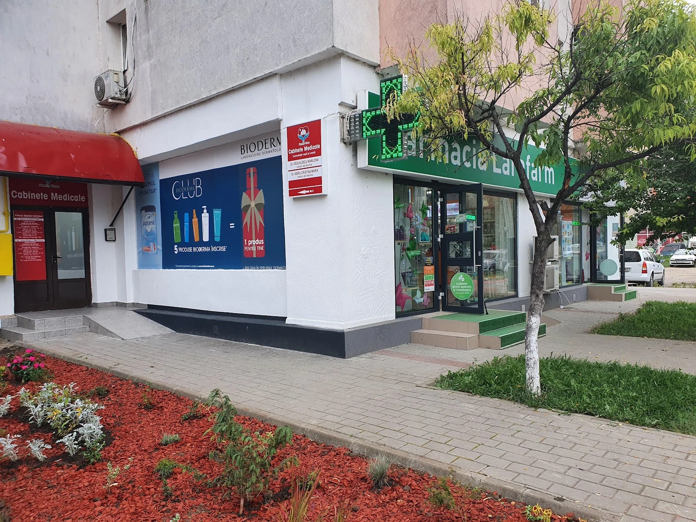
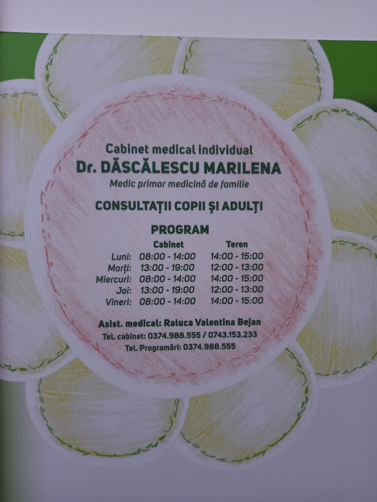
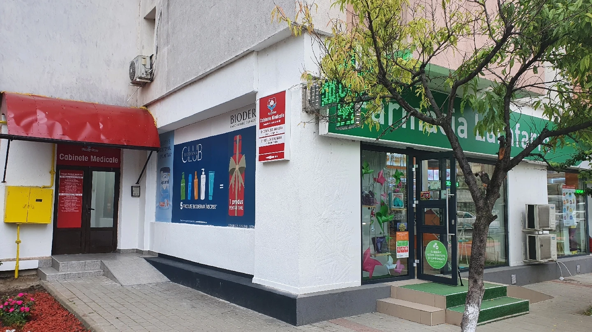

{{Medic de familie · Iași|Family doctor · Iași|Médica de família · Iași}}
{{Cabinet de medicină de familie|Family medicine practice|Consultório de medicina familiar}}Dăscălescu Marilena
4,3 {{pe Google · 38 de recenzii|on Google · 38 reviews|no Google · 38 avaliações}}
{{Consultații pentru copii și adulți, în Șoseaua Nicolina 103. Alege tipul consultației și cerem programarea împreună.|Consultations for children and adults, at Șoseaua Nicolina 103. Pick the type of consultation and we’ll request the appointment together.|Consultas para crianças e adultos, na Șoseaua Nicolina 103. Escolha o tipo de consulta e pedimos a marcação juntos.}}

{{Cabinetul|The practice|O consultório}}
{{Medicină de familie pentru copii și adulți|Family medicine for children and adults|Medicina familiar para crianças e adultos}}
{{Cabinet individual de medicină de familie, în Bloc 1000, pe Șoseaua Nicolina 103. Pe afișul din cabinet scrie „consultații copii și adulți”.|An individual family medicine practice in Bloc 1000, at Șoseaua Nicolina 103. The notice in the practice reads “consultations for children and adults”.|Consultório individual de medicina familiar no Bloc 1000, na Șoseaua Nicolina 103. No cartaz do consultório lê-se «consultas para crianças e adultos».}}
{{Sensul general al recenziilor publice, parafrazat:|The general sense of the public reviews, paraphrased:|O sentido geral das avaliações públicas, parafraseado:}}
{{Părinți de bebeluși spun că au primit răspuns repede și sfaturi la nevoie.|Parents of babies say they got quick replies and advice when needed.|Pais de bebés dizem que tiveram resposta rápida e conselhos quando precisaram.}}
{{Pacienții menționează empatie și pregătire din partea doamnei doctor și a asistentei.|Patients mention empathy and preparation from both the doctor and the nurse.|Os pacientes referem empatia e preparação da médica e da enfermeira.}}
{{Nota de 4,3 arată că nu toți pacienții au avut aceeași experiență.|The 4.3 rating shows not every patient had the same experience.|A nota de 4,3 mostra que nem todos os pacientes tiveram a mesma experiência.}}

{{Program|Hours|Horário}}
{{Cabinet și teren, zi cu zi|Practice and field hours, day by day|Consultório e visitas, dia a dia}}
{{Programul de mai jos e cel de pe afișul cabinetului. de confirmat la telefon.|The hours below are those on the practice notice. to be confirmed by phone.|O horário abaixo é o do cartaz do consultório. a confirmar por telefone.}}
| {{Ziua|Day|Dia}} | {{Cabinet|Practice|Consultório}} | {{Teren|Field|Visitas}} |
|---|---|---|
| {{Luni|Monday|Segunda}} | 08:00–14:00 | 14:00–15:00 |
| {{Marți|Tuesday|Terça}} | 13:00–19:00 | 12:00–13:00 |
| {{Miercuri|Wednesday|Quarta}} | 08:00–14:00 | 14:00–15:00 |
| {{Joi|Thursday|Quinta}} | 13:00–19:00 | 12:00–13:00 |
| {{Vineri|Friday|Sexta}} | 08:00–14:00 | 14:00–15:00 |
| {{Sâmbătă|Saturday|Sábado}} | {{de confirmat|to be confirmed|a confirmar}} | |
| {{Duminică|Sunday|Domingo}} | {{închis|closed|fechado}} | |
{{„Teren” e rubrica de pe afiș; ce înseamnă exact, aflați la telefon.|“Teren” is the column on the notice; ask by phone what it covers exactly.|«Teren» é a coluna do cartaz; pergunte por telefone o que abrange.}}
{{Programare|Appointment|Marcação}}
{{Ce fel de consultație cauți?|What kind of consultation do you need?|Que tipo de consulta procura?}}
{{Contact|Contact|Contactos}}
{{Bloc 1000, Șos. Nicolina 103|Bloc 1000, Șos. Nicolina 103|Bloc 1000, Șos. Nicolina 103}}
- {{Telefon|Phone|Telefone}}0743 153 233
- {{Adresă|Address|Morada}}Bloc 1000, Șos. Nicolina 103, 700303 Iași
- {{Program|Hours|Horário}}{{Luni de la 08:00, duminică închis. Programul pe zile: |Monday from 08:00, closed Sunday. Hours by day: |Segunda a partir das 08:00, domingo fechado. Horário por dia: }}{{vezi pagina Program|see the Hours page|ver a página Horário}}
